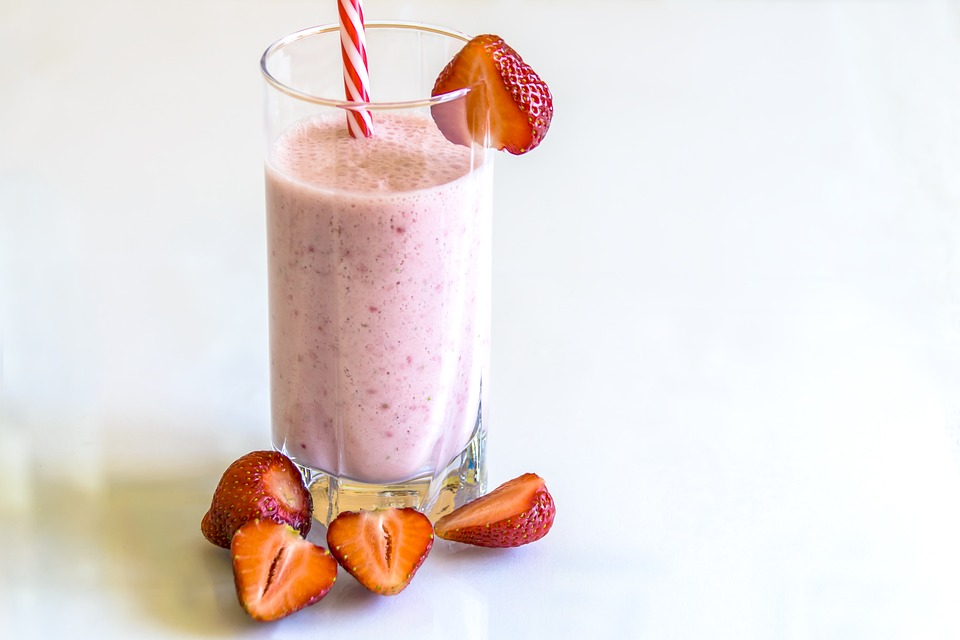
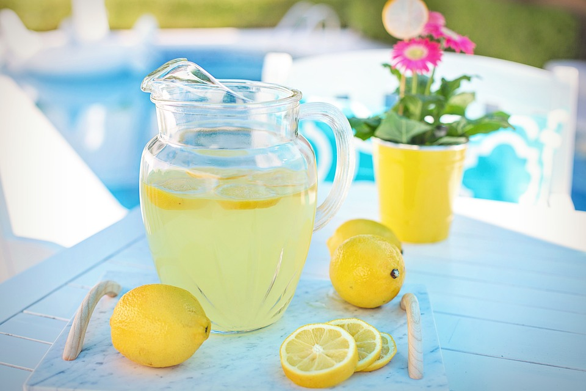

Smoothie de morango
Criado em 22/03/2023 Uma bebida saudável para o dia a dia, gostosa, rica em nutrientes e uma ótima opção para beber antes ou depois das atividades físicas.
Outros smoothies:
Smoothie de banana;
Smoothie de manga com geleia;
Smoothie de banana e coco;
Smoothie de frutas vermelhas.
Limonada
Criado em 18/03/2023 Uma bebida refrescante, onde muitos optam para beber em um dia de calor, a limonada é uma opção saudável, pois reduz a produção de colesterol e os níveis de açúcar no sangue.
O limão é muito rico em citrato de potássio, por isso é uma bebida importante, muitas pessoas optam a tomar limonada diariamente.
Salada de fruta
Criado em 15/03/2023
Uma sobremesa deliciosa, saudável e prática de se fazer, é uma alimentação que tem um papel essencial em uma dieta, pois é muito nutritiva e cheia de sabores.
A salada de fruta possui muitas vitaminas, mineirais e fibras, além de ajudar a auxiliar o bom funcionamento do nosso organismo, tem baixas calorias, ajuda nas celulites e muito mais!
Postagens recentes
Muitos temas serão postados em breve, aguarde!